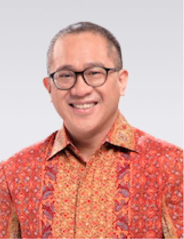

Vivek Sood
President Commissioner

Thomas Hundt
Commissioner

Nik Rizal Kamil
Commissioner

Alexander S. Rusli
Independent Commissioner

Thandalam Veeravalli Thirumala Chari (Chari TVT)
Independent Commissioner

Kanishka Gayan Wickrama
President Director

Yosafat Marhasak Hutagalung
Director
Thandalam Veeravalli Thirumala Chari
Chairman of Audit Committee
Alexander S Rusli
Member of Audit Committee

Tio I Huat
Member of Audit Committee

Barry Alfa Rattu
Member of Audit Committee
Alexander S. Rusli
Chairman of Nomination and Remuneration Committee
Vivek Sood
Member of Nomination and Remuneration Committee
Thomas Hundt
Member of Nomination and Remuneration Committee

Rininta Agustina
Corporate Secretary